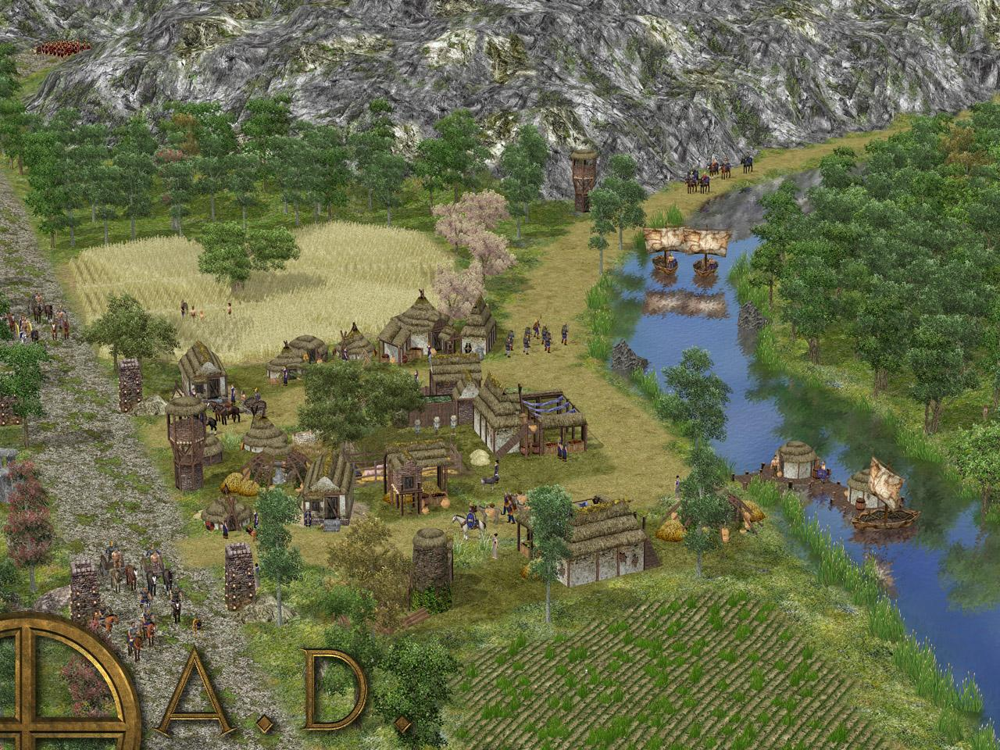

Pagina referida al sofware libre
El mundo del software libre no solo se trata de herramientas de productividad y sistemas operativos robustos, también hay una impresionante colección de juegos que demuestran que la diversión y el código abierto van de la mano. Hoy quiero compartir mi top three de juegos nativos que he disfrutado al máximo: 0 A.D., SuperTuxKart y Xonotic. Cada uno de estos juegos no solo es entretenido, sino que también representa el espíritu de la comunidad de software libre.
Descripción
0 A.D. es un juego de estrategia en tiempo real (RTS) que te transporta a la antigüedad, permitiéndote comandar civilizaciones históricas en épicas batallas. Inspirado en clásicos del género como Age of Empires, 0 A.D. destaca por su atención al detalle y su compromiso con la precisión histórica.
Características Principales
Descripción
SuperTuxKart es un juego de carreras arcade que presenta a Tux, el icónico pingüino de Linux, y a otros personajes de la comunidad de software libre. Con pistas coloridas y power-ups divertidos, SuperTuxKart es un juego que garantiza horas de diversión.
Características Principales
Experiencia Personal
SuperTuxKart es un soplo de aire fresco en el género de carreras arcade. Sus controles intuitivos y su estilo de juego rápido lo hacen perfecto para partidas rápidas. Además, la estética y los personajes encantadores lo convierten en un juego accesible y divertido para todas las edades.
Descripción
Xonotic es un shooter en primera persona (FPS) rápido y frenético que combina elementos de juegos clásicos como Quake y Unreal Tournament. Con una jugabilidad basada en habilidades y reflejos rápidos, Xonotic ofrece una experiencia competitiva intensa.
Características Principales
Experiencia Personal
Xonotic me ha enganchado con su acción rápida y su énfasis en la habilidad del jugador. Cada partida es una prueba de reflejos y estrategia, y la comunidad en línea es competitiva y acogedora. Los gráficos y efectos son impresionantes, considerando que se trata de un proyecto de código abierto.
Conclusión
Estos tres juegos, 0 A.D., SuperTuxKart y Xonotic, representan lo mejor de los juegos nativos de software libre. No solo son divertidos y adictivos, sino que también destacan por su calidad y el compromiso de sus respectivas comunidades de desarrollo. Si aún no los has probado, te animo a que les des una oportunidad. Seguro que encontrarás en ellos horas de entretenimiento y una nueva apreciación por el mundo del software libre.
¿Tienes algún juego de código abierto favorito que no mencioné?
¡Déjame saber en los comentarios y comparte tus recomendaciones!